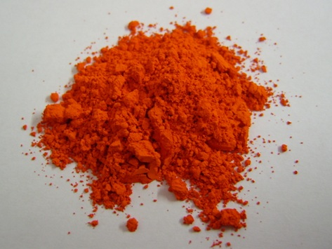
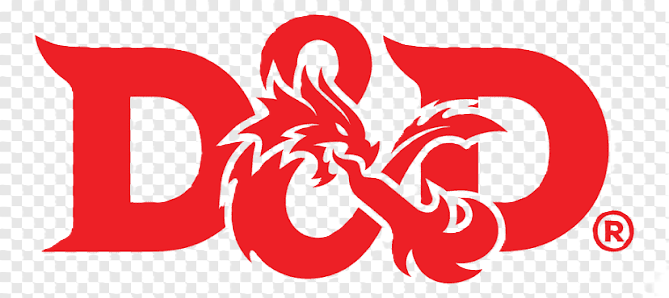

Origen Histórico y Manuscritos
El término "miniatura" proviene del latín miniare (colorear con minio), un óxido de plomo rojo usado en la iluminación de manuscritos medievales. Los artistas primitivos utilizaban minerales molidos aglutinados con clara o yema de huevo (temple). Entre los siglos XVI y XIX, los retratos portátiles sobre vitela o marfil popularizaron el uso de acuarelas y gouaches diluidos con goma arábiga.

El Nacimiento del Hobby Moderno
En la década de 1970, el auge de juegos como Dungeons & Dragons generó la necesidad masiva de pintar figuras de wargames y rol. Inicialmente, los aficionados recurrían a óleos o pinturas artísticas convencionales. Estos productos tardaban demasiado en secar y sus capas gruesas ocultaban los detalles más pequeños de las piezas.

La Revolución del Acrílico Especializado
Durante las décadas de 1980 y 1990, compañías como Games Workshop y Vallejo desarrollaron fórmulas acrílicas a base de agua específicas para el modelismo. El acrílico ofreció un secado rápido, dilución segura con agua y una pigmentación extremadamente fina que respeta el relieve esculpido. Además, se introdujo el frasco cuentagotas para optimizar la conservación del producto.